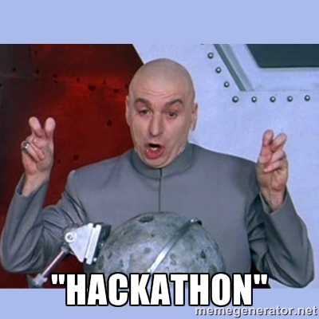
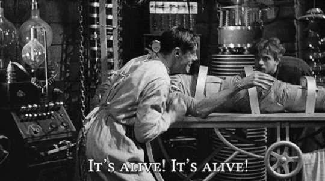
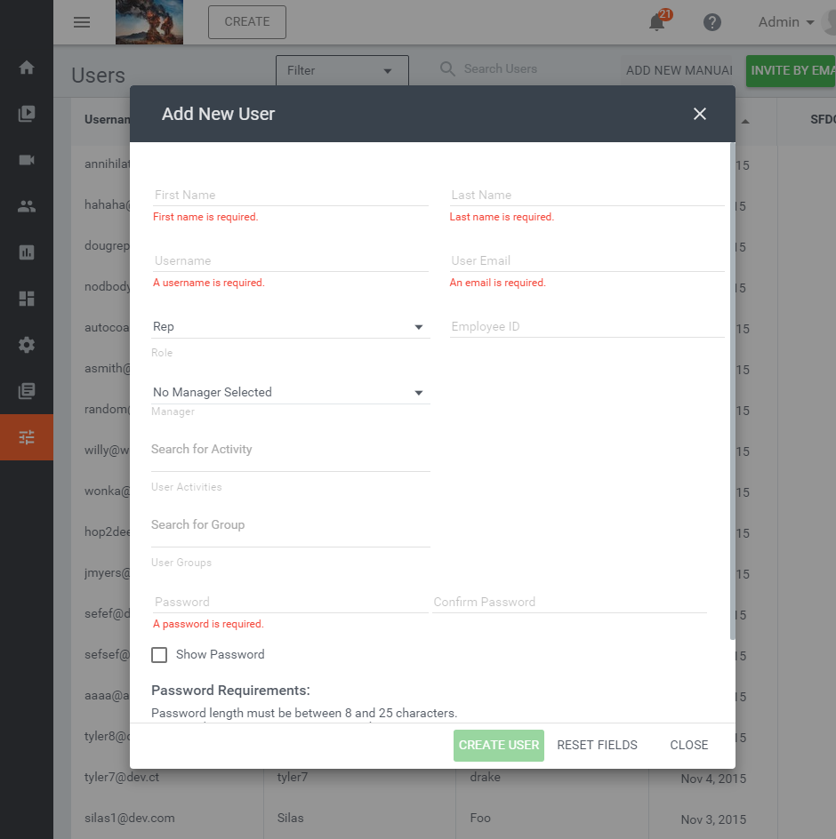
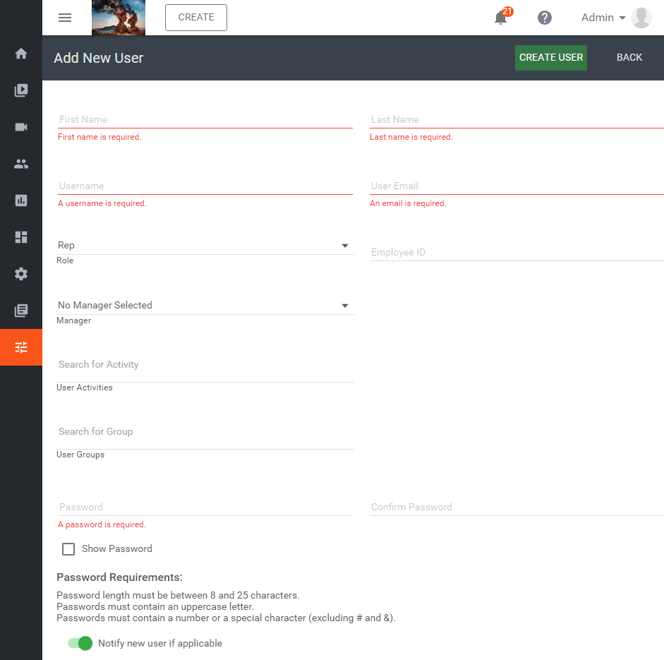

CT 2015 Hackathon A/B Testing
Chris Driscol & Steve Tyree
wtf is a/b testing?

- expirements
- comparing 2+ designs, workflows, etc
- collecting data
what we needed:
- toggles
- experiment
- analytics
feature toggles
- toggling features on/off
- user and/or tenant based
- experimenting
- phased rollouts
- less branching
show me code..
if(featureFlags.isOn('fuzzy-router')) {
//.. do stuffs
}
an example..
fuzzy routerexperiment..
user creation
using a modal (A)
using a page (B)
measuring
- time to create
- saves per view
code please..
function showCreateUser(user, trackers) {
if(featureFlags.isOn('ST01B')) {
// navigate to page
} else {
// show dialog
}
}
an example..
create useranalytics
- piwik events
- this sucked..
show me code..
function showCreateUser(user, trackers) {
var experiment = 'ST01: Admin User Create',
variant = 'ST01A: Admin User Create Modal',
timeTracker = trackers.get(experiment, variant, 'Time on Page'),
saveTracker = trackers.get(experiment, variant, 'Saved User');
if(featureFlags.isOn('ST01B')) { // ...
} else {
timeTracker.trackPromise( // <- tracks how long the dialog is open
UserCreateDialog.show()
.then(function(user) {
saveTracker.trackEvent(1); // <- tracks save
}).catch(function() {
saveTracker.trackEvent(0); // <- tracks non-save
}));
}
}
what we learned
- piwik is not good at experiments
- easy to implement toggles/metrics
- A/B Testing is common
- toggles are cool
next steps would be..
- define some experiments
- pick an experiment platform
- build robust toggles